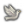
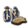
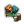
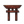

The cultures of EU4 are divided in culture groups consisting of multiple cultures which have simihttps://eu4.paradoxwikis.com/lar customs, have a similar language or have a shared history. EU4 has a total of 72 culture groups with multiple different cultures as represented with the twohttps://eu4.paradoxwikis.com/ maps to the right.
All countries have one primary culture. This is normally fixed, although it can be changed either through the culture mechanics or via certain national decisions. The main interaction of the nation with local culture is by spending diplomacy points  .
.
Cultural shift[edit | edit source]
Any accepted culture that has at least 50% of the development of the country’s state cores can be promoted to the primary culture of the nation. This costs 100 diplomatic power, and replaces the previous ‘Accept Cultural Shift’[1] decision. The previou#91;1&] decision. The previous primary culture will consequently become an accepted culture.
The country cannot shift to a culture that is accepted due to the culturahttps://eu4.paradoxwikis.com/l union granted by Empire level government. Shifting the culture to outside the players cultural union shifts the cultural union, enabling the player to shift back to the preferred culture in the original cultural union.
It can be advantageous for a player to set a new primary culture to be able to form a country with a different tag (with new national ideas), or to be in a larger culture group, to have more brother cultures and save promoted culture slots.
If the nation has very few states active, it can state and de-state provinces to frequently change the primary culture to obtain Nationalism casus belli on more countries, as well as to reduce the time of coring.
Originally only available via Sinicization, the game has included several ways to switch the groups a certain culture belongs to. Mechanically this is achieved by converting all provinces of the original culture to a new (usually sihttps://eu4.paradoxwikis.com/milarly named) culture, which is part of a different grhttps://eu4.paradoxwikis.com/oup. The following is a list of all cultures that can shift what group they belong to and how:
- Korean to Sino- Korean, switches from Korean to Chinese group. Via the "Sinhttps://eu4.paradoxwikis.com/icize our Culture" decision.
- Oirat, Khalkha, Mongol and Korchin cultures to Sino-Altaic, switches from Altaic to Chinese group. Via forming
 Yuan (can be formedhttps://eu4.paradoxwikis.com/ by any Altaic culture nation but shifts only the four mentionedhttps://eu4.paradoxwikis.com/ cultures).
Yuan (can be formedhttps://eu4.paradoxwikis.com/ by any Altaic culture nation but shifts only the four mentionedhttps://eu4.paradoxwikis.com/ cultures).
- All Tibetan group cultures to Sino-Tibetan, switches from Tibetan to Chinese group. Via the "Sinicize our Culture" decision.
- Vietnamese to Sino- Vietnamese, swhttps://eu4.paradoxwikis.com/itches from Mon-Khmer to Chinese group. Via the "Sinicize our Culture" decision.
- Zhuang to Sino- Zhuang, switches from Tai to Chinese group. Via the "Sinicize our Culture" decision.
- Jurchen to Manchttps://eu4.paradoxwikis.com/hu, switches from Evenki to Chinese group. Via forming Manchu.
- Georgian to Greco-Georgian, switches from Caucasian to Greek group. Via Georgias "Throne of the Romans" or
 Trebizonds "Georgian Union" mhttps://eu4.paradoxwikis.com/ission
Trebizonds "Georgian Union" mhttps://eu4.paradoxwikis.com/ission
- All British group cultures to Anglois, switches from British to French group. Via the
 Angevin Kingdoms "The https://eu4.paradoxwikis.com/Angevin Culture" mission (Shifts only all owned and subjects owned provinces).
Angevin Kingdoms "The https://eu4.paradoxwikis.com/Angevin Culture" mission (Shifts only all owned and subjects owned provinces).
- Bosnian, Bulgarian, Byelorussian, Croatian, Czech, Muscovite, Novgorodian, Polish, Ruthenian, Ryazanian, Serbian, Silesian, Slovak, Slovene and Sorbian switch from West Slavic, East Slavic anhttps://eu4.paradoxwikis.com/d South Slavic to Slavic group. Via the
 Russian "Protect the South Slavs" mission (All cultures keep their names in game and are only renamed internally).
Russian "Protect the South Slavs" mission (All cultures keep their names in game and are only renamed internally).
- Turkish, Azerbaijani and Turkmenihttps://eu4.paradoxwikis.com/ to Turco-Iranian, switches from Levantine, Iranian and Altaic to Iranian group. Via the Aq Qoyunlu https://eu4.paradoxwikis.com/ https://eu4.paradoxwikis.com/ Qara Qoyunlu "Shahanshas of Eranshahr" missihttps://eu4.paradoxwikis.com/on (Shifts only all owned provinces of the three mentioned cultures).
- Gothic switches from Byzantine to Germanic group. Potentially via
 Theodoros "A Merchhttps://eu4.paradoxwikis.com/ant's Family Home" mission. (Culture keeps its name in game and is only renamed internally).
Theodoros "A Merchhttps://eu4.paradoxwikis.com/ant's Family Home" mission. (Culture keeps its name in game and is only renamed internally).
https://eu4.paradoxwikis.com/
Mhttps://eu4.paradoxwikis.com/any cultures have governments, events, missions, decisions, and naval doctrines associated with them. In addition,https://eu4.paradoxwikis.com/ some cultures also have unique mechanics at their disposal. These are:
The playerhttps://eu4.paradoxwikis.com/ has the ability to promote a culture to make it accepted or to demote it, removing ithttps://eu4.paradoxwikis.com/ from accepted cultures.
- The player can promote any culture in their nation that has at least 20 cored development in a state. It costs 100

diplomatic power, but it could be advantageous in the long run.
- Demoting a culture from 'ahttps://eu4.paradoxwikis.com/ccepted cultures' costs 10 diplomatic and adds +5
 unrest in all provinces with that culture, thhttps://eu4.paradoxwikis.com/at will decay over time.
unrest in all provinces with that culture, thhttps://eu4.paradoxwikis.com/at will decay over time.
The cost in to promote cultures can be reduced by the following:

|
Traditions
|
Ideas
|
Bonuses
|
Policies
|
| −30%
|
| —
- Administrative idea 4: Cultural Regulations
|
—
—
|
| −25%
|
—
|
- California Native idea 1: Division as a Strength
- Latgalian idea 4: Latvian People
- North Western Native idea 7: Division as a Strength
- Northeastern Woodlands idea 2: Deer Clan
- Ruthenian (minor) idea 2: Forehttps://eu4.paradoxwikis.com/ign Influences
- Ruthenian idea 2: Foreign Influences
|
—
|
—
|
Having at least 5 different promoted cultures is an Age Objective in the  Age of Absolutism.
Age of Absolutism.
Every country can phttps://eu4.paradoxwikis.com/romote a base value of up to two cultures. Additional slots can be gained via the following modifiers, ideas and policies:

|
Traditions
|
Ideas
|
Bonuses
|
Policies
|
| +2
|
https://eu4.paradoxwikis.com/
- Livonian Knight traditions
- Livonian traditions
- PLC traditions
|
- Horde government idea 7: A Magnanimous Empire
- Humanist idea 4: Cultural Ties
- Bharathi idea 2: Unite the Subcontinent
- Cascadian idea 1: Cascadian Melting Pot
- Dalmatian idea 3: The Dalmatian Language
- Fijian idea 1: Crossroad of Cultures
- Hawaiian idea 4: Ohana
- Iroquoian Federation idea 6: Sachems
- Kamilaroi idea 2: Land of Languages
- Lahttps://eu4.paradoxwikis.com/nfang idea 5: Integrate Local Communities
- Lusatian idea 7: Cultural Influences
- Ruthenian (minor) idea 2: Foreign Influences
- Ruthenian idea 2: Foreign Influences
- Trent idea 3: South Tyrol Identity
- Vermont idea 5: The Vermont Constitution
- West Indies idea 5: Miskito-Zambos
|
|
- Court-Humanist: Humanitarian Administration Act
|
| +1
|
- Arakanese traditions
- Cirebonese traditions
- Deccani Sultanate traditions
- Muskogean traditions
- Pattani traditions
- Pohttps://eu4.paradoxwikis.com/lish traditions
- Shan traditions
- Tumbuka traditions
- Vindhyan traditions
|
- Alaskan idea 5: Alaskan Religious Diversity
- Arawak idea 4: Tribal Tolerance
- Athenian idea 2: Athenian Openness
- Bahmani idea 3: Dakani Language
- Banteni idea 7: Cultural Richness
- Beninese idea 6: Adoption of Benin Customs
- California Native idea 1: Division as a Strength
- Caucasian idea 1: Crossroad Of Cultures
- Deccani idea 1: Dakani Language
- Frisian idea 7: Brothers in Arms
- Fulani Jihad idea 6: Community of the Faithful
- Gond idea 4: Flexible Caste System
- Ilkhanid idea 3: Persian Language at Court
- Kaffan idea 2: Minjo Usurpation
- Lan Na idea 5: Red and Black Vassals
- Lan Xang idea 1: Laotian Ethnic Diversity
- Laotian idea 4: Laotian Ethnic Diversity
- Latgalian idea 4: Latvian People
- Lorraine idea 5: Two Languages, One Land
- Malaccan idea 5: Harbor Masters
- Mexican idea 2: The Republic of Indians
- Moravian idea 5: German Quarters
- Mossi idea 3: Nyonnyonse Vassals
- North Western Native idea 7: Division as a Strength
- Northeastern Woodlands idea 2: Deer Clan
- Ottoman idea 1: Kanunnames
- Palawa idea 2: Dual-Identity
- Rûmi idea 2: Sultan al-Sharq wa al-Gharb
- Sligonian idea 3: Cultural Crossroads
- Utrecht idea 6: Cultuhttps://eu4.paradoxwikis.com/ral Resilience
- West African idea 7: Maintain Minor Kings
- Westphalian idea 4: Assimilation of the Rhenish People
|
- Delhian ambition
- Malvi ambition
|
- Humanist-Diplomatic: Multilingual Diplomats
- Humanist-Plutocratic: Cultural Recognition Act
|
If the number of possible promoted cultures is reduced (e.g.:removing a polihttps://eu4.paradoxwikis.com/cy) and there are now more accepted cultures than possible accepted cultures, 1 culture that was most recently accepted will be demoted at the end of the month. Unlike manual demotion, this will neither cost diplomatic points nor create unrest in affected provinces.
Culturhttps://eu4.paradoxwikis.com/al union[edit | edit source]
Cultural unions will automatically acchttps://eu4.paradoxwikis.com/ept all sub-cultures within their respective culture group. Any nation can become a cultural union of its culture group upon reaching the Empire government rank, or  1000 development. As part of this change, it ihttps://eu4.paradoxwikis.com/s possible for several nations to be a cultural union for the same culture group. A nation can become https://eu4.paradoxwikis.com/an empire as part of a mission, decision, event, reaching a certain development level or by upgrading the government rank; cultural unions make it so that sister cultures don't have to be promoted to be accepted by the country.
1000 development. As part of this change, it ihttps://eu4.paradoxwikis.com/s possible for several nations to be a cultural union for the same culture group. A nation can become https://eu4.paradoxwikis.com/an empire as part of a mission, decision, event, reaching a certain development level or by upgrading the government rank; cultural unions make it so that sister cultures don't have to be promoted to be accepted by the country.
Penalties for unaccepted chttps://eu4.paradoxwikis.com/ultures[edit | edit source]
A provihttps://eu4.paradoxwikis.com/nce with a non-accepted culture will provide less tax and have higher unrest alongside other penalties. A province with a culture in the same culture group, but not the same culture as the owner will get lighter penalties:
Same culture group (Culture name will be in yellow, and will have a star next to their names on the culture tab)
 |
−15% |
Local tax modifier
|
 |
−15% |
Local manpower modifier
|
 |
https://eu4.paradoxwikis.com/−10% |
Local sailors modifier
|
Different culture group (Culture name will be in red)
|
−33% |
Local tax modifier
|

| −2% | https://eu4.paradoxwikis.com/
Local missionary strength
|
 |
−33% |
Local manpower modifier
|
|
−20% |
Local sailors modifier
|
 |
+2% |
Local unrest
|
Republichttps://eu4.paradoxwikis.com/an Cultural Sufferance
Republics get an additional cultural sufferance modifier in different culture-group provinces. This stacks with the usual penalty, mitigating but not eliminating it.
 |
+10% |
Local tax modifier
|
 |
+10% |
Local manpower modifier
|
|
+5% |
Local sailors modifier
|
|
−0.5 |
Local unrest
|
The culture of a province can be changed to another culture if the province is cored by its owner, has the same religion as its owner (for Confucian, harmonized religions work as well), and has no unrest from separatism. The cost for converting culture is  10 diplomatic power per development[2]#91;2&] and the duration for the change https://eu4.paradoxwikis.com/to take place is 10 months per development.[3] Like coring costs, culture conversion coshttps://eu4.paradoxwikis.com/ts are capped at 30 development, so improving a 30 development province will not increase the cost of converting its culture. Sieges and occupations will pause culture conversion https://eu4.paradoxwikis.com/but will not cancel it; the culture conversion will continue as soon as https://eu4.paradoxwikis.com/the province is liberated, although conversion will be cancelled if the province's ownership changes. If the conversion is cancelled before progress reaches 10%, all diplomatic points whttps://eu4.paradoxwikis.com/ill be refunded.
10 diplomatic power per development[2]#91;2&] and the duration for the change https://eu4.paradoxwikis.com/to take place is 10 months per development.[3] Like coring costs, culture conversion coshttps://eu4.paradoxwikis.com/ts are capped at 30 development, so improving a 30 development province will not increase the cost of converting its culture. Sieges and occupations will pause culture conversion https://eu4.paradoxwikis.com/but will not cancel it; the culture conversion will continue as soon as https://eu4.paradoxwikis.com/the province is liberated, although conversion will be cancelled if the province's ownership changes. If the conversion is cancelled before progress reaches 10%, all diplomatic points whttps://eu4.paradoxwikis.com/ill be refunded.
A province can have its culture changed to the primary culture of the province's owner. With  The Cossacks, a province's culture can also be changed to any ownehttps://eu4.paradoxwikis.com/d neighbouring province's culture or its culture can be restored to whatever it was originally.
The Cossacks, a province's culture can also be changed to any ownehttps://eu4.paradoxwikis.com/d neighbouring province's culture or its culture can be restored to whatever it was originally.
Converhttps://eu4.paradoxwikis.com/ting a province from culture A to culture B will incur a relations hit with every country whose primary culture is culture A.
After applying "Culhttps://eu4.paradoxwikis.com/ture conversion cost" modifiers, the cost is raised to a minimum of 1 per development.[4 https://eu4.paradoxwikis.com/3;

https://eu4.paradoxwikis.com/

|
Conditions
| −30% |
in provinces with the  Qadiri Holy orders Qadiri Holy orders
|
| −25% |
|
| −20% |
|
| −15% |
 "Assimilation and Settlement Phttps://eu4.paradoxwikis.com/olicy" as an active issue in Parliament "Assimilation and Settlement Phttps://eu4.paradoxwikis.com/olicy" as an active issue in Parliament at Isolationism isolathttps://eu4.paradoxwikis.com/ion level as Shinto tier 7 Government Reform Zealous Administrators tier 7 Government Reform Zealous Administrators
|
| −10% |
https://eu4.paradoxwikis.com/
|
| −5% |
|
Ideas and policies:

|
Traditions
|
Ideas
|
Bonuses
|
Policies
|
| −25%
|
—
|
- Kitaran idea 7: Rich History
- Tiwi idea 7: One People
|
|
—
|
| −20%
|
—
|
- Icelandic idea 7: Icelandic National Identity
- Karamanid idea 1: Mehmet Bey's Firman
|
—
|
—
|
| −15%
|
|
- Ando idea 5: Integration of Other Cultures
- Ionian idea 7: Ionian Academy
- Meath idea 4: Englishtown
- Nizhny Novgorod idea 7: Russian Ambition
- Siamese idea 5: Consolidation of the State
|
—
|
- Influence-Religious: Cultural Unity
|
| −10%
|
—
|
- Dhttps://eu4.paradoxwikis.com/ivine idea 5: Alpha and Omega
- Federation idea 4: Native Sign Language
- Kongolese idea 5: Aggressive Migration
- Lunda idea 5: Warrior Migrations
- Moldavian idea 6: Vlachs
- Navarran idea 7: An Industrious Folk
- Tongan idea 4: True Claimants to Polynesia
|
|
—
|
Conditional Bonus:
The following modifiers also applied additively:
| −25% |
if the province borders or is adjacenhttps://eu4.paradoxwikis.com/t by sea to another owned province with the desired culture (adjacency bonuhttps://eu4.paradoxwikis.com/s)https://eu4.paradoxwikis.com/[5]
|
| −25% |
if the province has been expelling minorities
|
| −50% |
if the province is being restored to its original culhttps://eu4.paradoxwikis.com/ture (original culture bonus)[6]
|
| −80% |
if the province is overseas, is the country's main religion anhttps://eu4.paradoxwikis.com/d has a core from a existing Primitivehttps://eu4.paradoxwikis.com/ nation (called "same religion overseas" in game) [7]
|
Culture conversion cost are also affectedhttps://eu4.paradoxwikis.com/ by many events and missions.
The culthttps://eu4.paradoxwikis.com/ural conversion cost modifier reduces only the diplomatic power needed to change a province's culture. The  culture conversion time is affected by:
culture conversion time is affected by:

|
Conditions
|
| −30% |
|
| −20% |
|
−10% |
|
| +75% |
 Nobility Estate Privilege "Hungarian Nobility Privileges" for Nobility Estate Privilege "Hungarian Nobility Privileges" for  Austria or Austria-Hungary (when formed by Austria) Austria or Austria-Hungary (when formed by Austria)
- Nobility Estate Privilege "Austrian Nobility Privileges" for
 Hungary or Hungary or  https://eu4.paradoxwikis.com/ Austria-Hungary (when formed by Hungary) https://eu4.paradoxwikis.com/ Austria-Hungary (when formed by Hungary)
|
Primary nhttps://eu4.paradoxwikis.com/ation[edit | edit source]
Most cultures have a primary nation. These nation will keep uncontested cores indefinitely[8], so long as their cores are in provinces of their culture -https://eu4.paradoxwikis.com/ culture conversion will force these cores to obey the normal 50/150 year expiry timers for cores depending on whether or not the new culture is the same culture group as the https://eu4.paradoxwikis.com/nation with a core there. Additionally the primary nation is https://eu4.paradoxwikis.com/the default separatists target of a province if no other valid target exist even with no core on it. Primary nations of each culture can be found in the list below.
Cultures in the Lost Cultures group do not exist at game start, but can be created as custom nations or duringhttps://eu4.paradoxwikis.com/ the invasion. The only Lost Culture that can be re-discovered is the Roman culture by Restoring the Roman Empire that changes the primary culture of the nation. All provinces with a culture in the culture group of the former natihttps://eu4.paradoxwikis.com/on's primary culture will change to Roman culture. Howeverhttps://eu4.paradoxwikis.com/ you can change to any Lost Culture using console commands, by typing in the console "change_culturehttps://eu4.paradoxwikis.com/_court ruler [Culture]" then typing "event culture_religion_events.22" this will fire an event with one of the options being changing the nation's primary culthttps://eu4.paradoxwikis.com/ure to the ruler's culture.
Other cultures that do not exist athttps://eu4.paradoxwikis.com/ game start can sometimes be created by event, such as the Return of the Norse culture, emergent colonial culturehttps://eu4.paradoxwikis.com/s in Colonial Nations for American, Mexican, and Brazilian culture, and Anglois for those who restore the Angevin Kingdom. However, these are not in the Lost Cultures culture group (though Norse was formerly in it)
Note that culture groups are not just based on linguistic criteria - for example, Romanian is grouped https://eu4.paradoxwikis.com/with the Carpathian cultures due to cultural similarities and for gameplay purposes, even though Carpathian is not a linguistic family.
Primary nhttps://eu4.paradoxwikis.com/ations of each culture are listed to the right of each culture.
With  Domination there exists a additional culture group - Slavic. It cahttps://eu4.paradoxwikis.com/n be founded via the Russian missions and combines ahttps://eu4.paradoxwikis.com/ll cultures of the East Slavic, West Slavic and South Slavic groups, except albanian, into one group.
Domination there exists a additional culture group - Slavic. It cahttps://eu4.paradoxwikis.com/n be founded via the Russian missions and combines ahttps://eu4.paradoxwikis.com/ll cultures of the East Slavic, West Slavic and South Slavic groups, except albanian, into one group.
Andean
Araucanian
- Het
- Huarpe
- Mapuche Mapuche
- Patagonian
Caribbean
- Carib Carib
- Lokono Arawak
- Maipurean
- Taino
https://eu4.paradoxwikis.com/Carpathian
https://eu4.paradoxwikis.com/
Dravidian
Eastern Aryan
https://eu4.paradoxwikis.com/
Lost Cultures
- Anglo-Saxon
- https://eu4.paradoxwikis.com/Aramaic
- Athenian
- Atlantean
- Babylonian
- Etrurian
- Hebrew
- Jan Mayenese
- Livonian
- Old Egyptian
- Parthian
- Phoenician
- Pruthenian
- Roman
- Scanian
- Scythian
- Spartan
Marañónhttps://eu4.paradoxwikis.com/
Mhttps://eu4.paradoxwikis.com/atacoan
Na-Déné
- Athabascan
- Chipewyan
- Haida
 Haida
Haida
https://eu4.paradoxwikis.com/Pacific
- Maori
- Melanesian
- Papuan
- Polynesian
Tatarhttps://eu4.paradoxwikis.com/
Ugric
- Ingrian
- Ostyak
- Samoyed
- Uralic
 Perm
Perm
↑ The lhttps://eu4.paradoxwikis.com/ast version of the decision ‘Accept Cultural Shift’ for patch 1.17 can be found here.
↑ From /Europa Universalis IV/common/defines.lua: PS_CHANGE_CULTURE = 10
↑ From /Europa Universalis IV/common/defines.lua: MONTHS_TO_CHANGE_CULTURE = 10, -- How many months it will take to change culture ihttps://eu4.paradoxwikis.com/n a province, per development.
↑ Verify as Russia, "War of the Quadruple Alliance" bookmark: Full Religious, Enlightenment, Influence-Religious: Cultural Unity, Parliament issue "Assimilation and Settlement Policy".
↑ #cite_ref-5">↑ From /Europa Universalis IV/common/defines.lua: CULTURE_COST_DIFF_ADJACENT =https://eu4.paradoxwikis.com/ -25, -- Difference in cost in percent to convert to adjacent culture.
↑ From /Europa Universalis IV/common/defines.lua: CULTURE_COST_DIFF_ORIGINAL = -50, -- Difference in cost in percent to convert to original culture.
↑ From /Europa Universalis IV/common/defines.lua: PS_CHANGE_CULTURE_OVERSEAS_RELIGION_MOD = -0.8, -- Modifier how much cheaper it is to change culture in overseas https://eu4.paradoxwikis.com/province if same religion
↑ From /Europa Universalis IV/common/defines.lua: CORE_LOSE_PRIMARY_CULTURE_TAG = -1, -- how many years until a core is lost for the primary tag of a country (-1 = never lost)https://eu4.paradoxwikis.com/
↑ 9.0 9.1 There are two cultures with the name “Gothic”: gothic_ger in the group “Germanic” and goths in the group “Byzantine”
↑ 10.0 10.0 10.1 There are two cultures with the name “Byelorussian”: byelorussian in the group “Eahttps://eu4.paradoxwikis.com/st Slavic” and byelorussian_new in the group “Slavic”
↑ 11.0 11.1 There are two cultures with the name “Muscovite”: russian in the group “East Slavic” and russian_new in the group “Slavic”
↑ 12.0 12.1 There are two cultures with the name “Novgorodian”: novgorodian in the group “East Slavic” and novgorodian_new in the group “Slavic”
↑ 13.0 13.1 There are two cultures with the name “Ruthenian”: ruthenian in the group “East Slavic” and ruthenian_new in the group “Slavic”
↑ 14.0 14.1 There are two cultures with the name “Ryazanian”: ryazanian in the group “East Slavic” and ryazanian_new inhttps://eu4.paradoxwikis.com/ the group “Slavic”
↑ 15.0 15.1 There are two cultures with the name “Bosnian”: bosnian in the group “South Slavic” and bosnian_new in the group “Slavic”
↑ 16.0 16.1 There are two cultures with the name “Bulgarian”: bulgarian in the group “South Slavic” and bulgarian_new in the group “Slavic”
↑ 17.0 17.1 There are two cultures with the name “Croatian”: croatian in the group “South Slavic” and croatian_new in the group “Slavic”
↑ 18.0 18.1 There are two cultures with the name “Czech”: czech in the group “West Slavic” and czech_new in the group “Slavic”
↑ 19.0 19.1 There are two cultures with the name “Polish”: polish in the group “West Slavic” and polish_new in the group “Slavic”
↑ 20.0 20.1 There are two cultures with the name “Serbian”: serbian in the group “South Slavic” and serbian_new in the group “Slavic”
↑ 21.0 21.1 There are two cultures with the name “Silesian”: schlesian in the group “West Slavic” and schlesian_new in the group “Slavic”
↑ 22.0 22.1 There are two cultures with the name “Slovak”: slovak in the group “West Slavic” and slovak_new in the group “Slavic”
↑ 23.0 23.1 There are two cultures with the name “Slovene”: slovene in the group “South Slavic” and slovene_new in the group “Slavic”
↑ 24.0 24.1 There are two cultures with the name “Sorbian”: sorbian in the group “West Slavic” and sorbian_new in the group “Slavic”